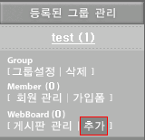
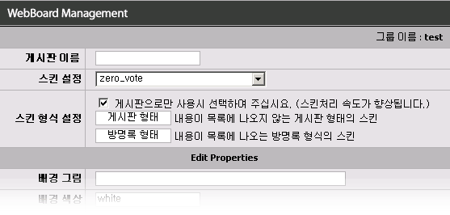
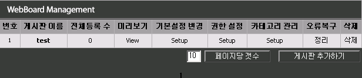
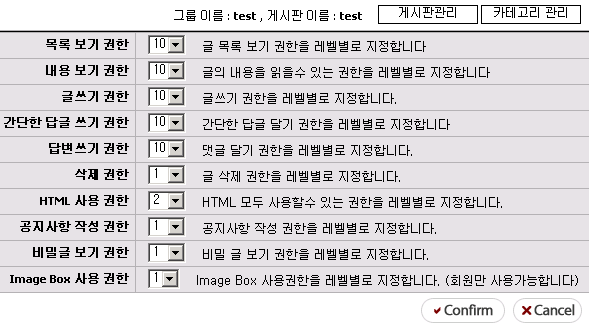
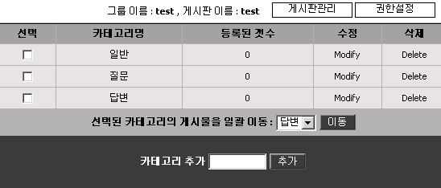

|
게시판 추가/ 관리/ 삭제 그룹 생성과 관리까지 이미 하신 분들은 이제 게시판을 추가하고 관리, 삭제하는 방법을 알아보도록 하겠습니다. 게시판은 쉽게 생성이 가능합니다.
1. 게시판 만들기  1. 그룹을 선택하면 나타나는 그룹메뉴에서 위의 그림에 빨간 테두리를 한 [추가] 버튼을 선택하세요. 1. 그럼 아래 그림과 같이 새로 생성할 게시판의 기본 설정을 입력하는 페이지가 나타납니다.  1. 그럼 각 항목을 하나 하나 알아보도록 하겠습니다.
1. 게시판 이름 : 생성할 게시판의 이름을 입력하는 부분입니다. 1. 게시판 이름 : 게시판 생성시 가장 중요한 부분입니다. 1. 게시판 이름 : 나중에 게시판을 생성한후 웹페이지에서 링크할때 사용하기 때문입니다. 1. 게시판 이름 : 만약 게시판 이름이 test 라면 1. 게시판 이름 : http://자신의계정도메인/제로보드디렉토리/zboard.php?id=test 의 1. 게시판 이름 : 형식으로 링크하기 때문입니다. 1. 게시판 이름 : 가능 하면 영문 소문자와 숫자만 이용하여 생성하시는 것이 좋습니다.
1. 스킨 설정 : 게시판의 형태를 선택할수 있습니다. 1. 스킨 설정 : 제로보드를 다운받은 초기 상태라면 기본 스킨만 들어 있는 상태입니다. 1. 스킨 설정 : http://zeroboard.com 에서 마음에 원하시는 스킨을 사용하고 싶으시면 해당 파일을 1. 스킨 설정 :다운 받아서:압축을 푼후 계정에 있는 제로보드 디렉토리의 skin 디렉토리 하단에 upload 1. 스킨 설정 :하시면 목록에 나타납니다.
1. 스킨 형식 설정 : 사용하고자 하는 스킨에 따라서 꼭 선택을 해주셔야 합니다. 1. 스킨 형식 설정 : 만약 일반적인 게시판처럼 목록에 제목만 나오는 경우에는 [게시판 형태]를 선택하시고 1. 스킨 형식 설정 : 방명록이나 링크, 자료실, 북마크 스킨등을 이용하실 때에는 [방명록 형태]를 선택하셔야 1. 스킨 형식 설정 : 합니다.
1. 배경 그림 : 게시판의 배경 그림을 지정할수 있습니다. 1. 배경 그림 : http://도메인/images/a.gif 등과 같이 절대 경로를 사용할수도 있고, 1. 배경 그림 : ../images/a.gif 등의 상대 경로를 사용할수도 있습니다.
1. 배경 색상 : 게시판 배경의 색상을 지정할수 있습니다. 1. 배경 색상 : 지정하지 않을 경우 기본적으로 White 로 선택이 됩니다.
1. 게시판 가로 크기 : 게시판의 가로 크기를 지정할수 있습니다. 1. 게시판 가로 크기 : 100 이하의 값을 입력하였을 경우에는 % 로 계산이 됩니다. 1. 게시판 가로 크기 : 기본으로 입력된 95는 95% 로 나타나게 됩니다.
1. 목록에서 제목 글자 제한 : 제목이 길어서 보기가 싫을때 입력된 숫자만큼을 제외하고 ... 를 붙여서 1. 목록에서 제목 글자 제한 : 문자열을 자릅니다.
1. 페이지당 목록 수 : 한 페이지에서 출력될 목록의 수를 정할수 있습니다. 1. 페이지당 목록 수 : 목록의 수가 많아질수록 속도가 느립니다.
1. 페이지 표시 수 : 게시판 목록의 하단에 있는 페이지 표시 ( 1[2][3]..) 등의 갯수를 지정할수 있습니다.
1. 타이틀 지정 : 브라우저 상단에 표시될 타이틀을 지정할수 있습니다.
1. 게시판 상단에 불러올 파일 : 그룹설정에서와 같이 각 게시판 별도로 불러올 파일을 지정할수 있습니다.
1. 게시판 상단에 출력할 내용 : 게시판의 상단에 출력할 내용입니다. 1. 게시판 상단에 출력할 내용 : 기본으로 가운데 정렬값이 <div align=center> 이 입력되어 있습니다.
1. 게시판 하단에 불러올 파일 : 게시판 하단에 별도로 불러올 파일을 지정할수 있습니다.
1. 게시판 하단에 출력할 내용 : 게시판 하단에 출력할 내용입니다.
1. 전체 목록 출력 : 게시판의 목록에서 원하는 글을 선택하였을때 내용 아래에 관련글이 아닌 1. 전체 목록 출력 : 해당 페이지의 목록이 모두 나오게 할수 있습니다.
1. 카테고리 사용 : 게시판에 여러가지 카테고리를 표시하는 기능입니다.
1. HTML 사용여부 : 많은 수의 HTML 태그들이 게시판을 망가트리는 행동을 할수 있습니다. 1. HTML 사용여부 : 그래서 게시판에 HTML의 사용 한도를 정할수 있습니다. 1. HTML 사용여부 : - 모두 막기 : 관리자를 제외한 누구도 HTML 문법을 게시물에 사용할수 없습니다. 1. HTML 사용여부 : - 부분 허용 : 허용된 HTML 태그를 제외한 모든 HTML 태그를 사용할수 없습니다. (추천) 1. HTML 사용여부 : - 모두 허용 : 모든 HTML 태그를 사용할수 있게 합니다. (절대 비추천)
1. 미리 보기 기능 : 게시판 목록에서 제목위에 마우스를 올려 놓으면 간단한 내용을 미리 볼수 있는 기능입니다.
1. 관련 사이트 링크 #1 : 게시물 입력시 관련된 사이트를 입력할수 있습니다.
1. 관련 사이트 링크 #2 : 게시물 입력시 관련된 사이트를 입력할수 있습니다.
1. 자료실 기능 : 해당 게시판의 자료실 기능을 활성화 시킵니다.
1. 첨부파일 #1의 허용 확장자 : 첫번재 업로드 파일의 첨부파일을 제어합니다. 1. 첨부파일 #1의 허용 확장자 : 원하는 확장자를 지정할수 있으며 ,(콤마) 를 이용하여 여러개를 지정 하실수 1. 첨부파일 #1의 허용 확장자 : 있습니다. 예) jpg,gif,png
1. 첨부파일 #2의 허용 확장자 : 두번째 업로드 파일의 첨부파일을 제어합니다.
1. 최고 업로드 가능 용량 : 파일 업로드시 용량을 제한할수 있습니다. 1. 최고 업로드 가능 용량 : 하지만 관리자도 무한대로 설정을 할수 없으며 서버마다 설정이 제각각 다릅니다. 1. 최고 업로드 가능 용량 : 최고한도 : 2M byte 로 나왔다면 그 서버에는 2M 의 첨부파일만 사용할수 있습니다. 1. 최고 업로드 가능 용량 : * 일반적인 계정업체에서는 기본 값인 2M byte로 제한을 두고 있습니다.
1. 바구니 기능 : 게시판 목록에서 바구니를 사용하는 것을 설정할수 있습니다. 1. 바구니 기능 : 바구니 기능은 여러개의 게시물을 한번에 볼때 사용합니다. 1. 바구니 기능 : 이는 게시판 기능 설명에서 자세히 설명해 드리도록 하겠습니다.
1. 자동링크 기능 : 게시물 내의 http://홈페이지 나 test@도메인.com 등의 각종 링크 글이 있을 경우 1. 자동링크 기능 : 자동으로 링크를 설정하는 기능입니다.
1. 글쓴이 서브메뉴 사용 : 글쓴이의 이름을 클릭할때 각종 정보가 레이어로 서브 메뉴형식으로 1. 글쓴이 서브메뉴 사용 : 나타나는 기능입니다. 1. 글쓴이 서브메뉴 사용 : 관리자의 경우 매우 편리하게 글쓴이의 정보를 추척/변경 할수도 있습니다.
1. 비밀글 사용 : 글쓴이와 비밀글 보기 권한을 가진 사람만 볼수 있는 비밀글을 사용하는 기능입니다.
1. 불량 단어 등록 : 게시물에 적합하지 않다고 생각되는 욕이나 각종 단어들을 필터링 지정하는 기능입니다. 1. 불량 단어 등록 : , (콤마) 를 이용해서 많은 단어를 설정할수 있습니다. 1. 불량 단어 등록 : 허용할 HTML 태그 : HTML 사용여부를 부분허용으로 하였을 경우에 사용 가능한 1. 불량 단어 등록 : HTML 태그의 목록입니다. 1. 불량 단어 등록 : ,(콤마) 를 이용해서 여러개를 지정할수 있습니다.
1. IP 차단 : 등록된 IP 사용자에 대해서는 해당 게시판에 접근이 불가능합니다. 1. IP 차단 : , (콤마)를 이용해서 여러개의 아이피를 막을수 있습니다. 1. IP 차단 : 그리고 앞의 3자리를 가지는 모든 IP를 막고 싶으면 앞의 3자리만 적어주면 됩니다. 1. IP 차단 : 예) 111.222.333.* 의 IP를 막고 싶은 경우 : 111.222.333 만 적어주시면 됩니다.
1. 이상의 설정 항목중 게시판 이름은 꼭 적으셔야 하며, 나머지를 설정하지 않으면 기본 정보가 입력이 됩니다. 1. 그럼 1. 생성된 게시판은 http://자신의계정도메인/제로보드디렉토리/zboard.php?id=게시판이름 으로 볼수 1. 있습니다.
2. 생성된 게시판의 관리 2. 하나의 게시판에는 기본설정, 권한 설정, 카테고리 관리 의 3가지 관리 기능이 있으며, 2. 오류 복구와 삭제 기능이 있습니다. 2. 아래 그림은 게시판 관리시 보여지는 게시판 목록 화면입니다.  2. 지금은 test 게시판 하나만 등록이 되어 있습니다. 2. 그럼 각 항목에 대해서 설명을 하겠습니다.
2. 게시판 이름 : 게시판의 이름(id) 입니다. 게시판 링크시 사용합니다. (예: zboard.php?id=게시판이름) 2. 전체 등록 수 : 해당 게시판의 전체 글 수 입니다. 2. 미리 보기 : 해당 게시판의 링크 입니다. 클릭하면 직접 볼수 있습니다. 2. 기본 설정 변경 : 기본적인 기능을 변경할수 있습니다. 2. 권한 설정 : 게시판의 글쓰기등의 권한을 지정할수 있습니다. 2. 카테고리 관리 : 카테고리 기능 사용시 카테고리 항목을 변경/추가/삭제 할수 있습니다. 2. 오류 복구 : 첫페이지의 글의 번호가 어긋났다던지, 카테고리 항목이 올바르지 않을경우 정리를 하여 줍니다. 2. 삭제 : 게시판을 삭제합니다.
그럼 위의 메뉴중 권한 설정과 카테고리 관리에 대해서 알아보도록 하겠습니다.
3. 권한 설정  3. 권한 설정을 클릭하시면 위의 그림과 같은 화면이 나타납니다. 3. 보이는 숫자들은 회원들의 레벨을 표시합니다. 3. 즉 목록보기 권한이 9 이면 비회원(기본 레벨 10) 이나 레벨 10으로 강등된 회원들은 3. 목록을 볼수가 없습니다. 3. 제로보드에서는 레벨은 1~10까지 있으며 1이 제일 높은 권한입니다. 3. 각 항목은 자세한 설명이 되어 있기에 모두 설명을 하지 않고 몇가지만 설명을 하겠습니다.
3. HTML 사용 권한 : 해당하는 레벨의 회원은 모든 HTML 태그를 쓸수 있습니다.
3. Image Box 사용권한 : 4.1에서 추가된 기능으로 각 회원마다 이미지 창고를 가질수 있습니다. 3. Image Box 사용권한 : 이 기능은 비회원은 사용이 불가능하며 기본적으로 레벨 1로 설정이 되어 있습니다. 3. Image Box 사용권한 : 일반회원까지 사용 가능하게 할 경우 서버의 낭비가 예상이 되므로 가능한 아무나 3. Image Box 사용권한 : 사용하지 못하게 설정하는 것이 좋습니다. 3. Image Box 사용권한 : 자세한 설명은 기능 설명 할때 해드리도록 하겠습니다.
4. 카테고리 관리  4. 게시판 설정에서 카테고리를 선택하였을 경우 카테고리 항목을 변경/추가/삭제 할수 있습니다. 4. 이미 게시물이 등록된 카테고리는 삭제가 불가능합니다. 4. 위의 선택 항목에 카테고리를 선택한후 이동을 하게 되면 해당 게시물의 카테고리가 일괄 변경이 됩니다.
4. 이제 게시판의 설정에 대해서는 모두 알아보았습니다. 4. 그럼 다음으로 회원 관리에 대해서 알아보도록 하겠습니다. |